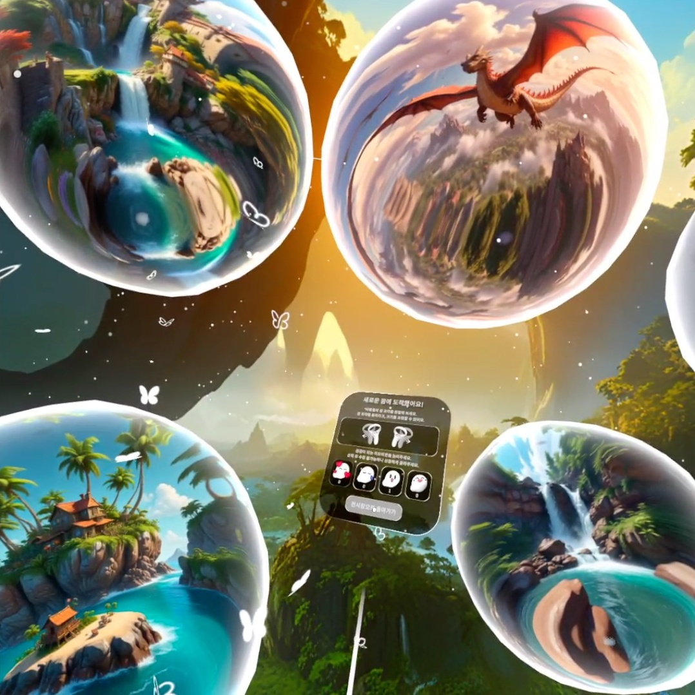
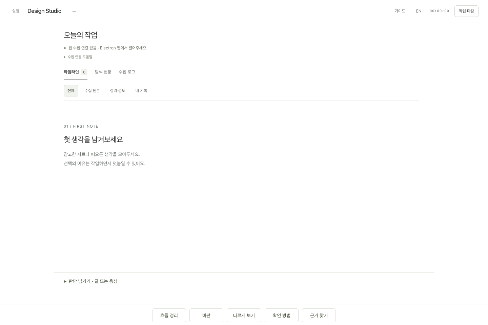
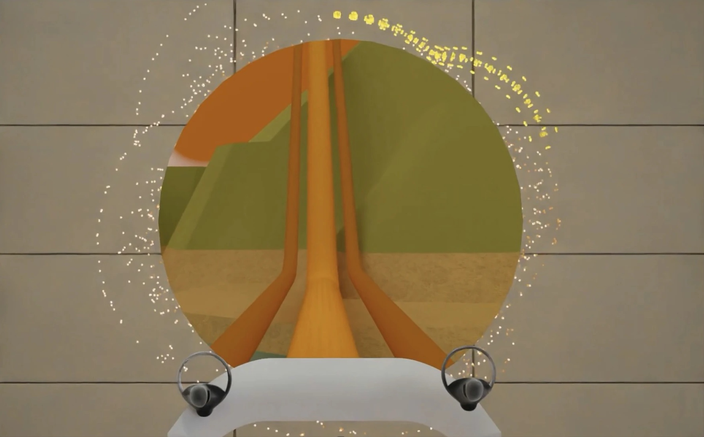
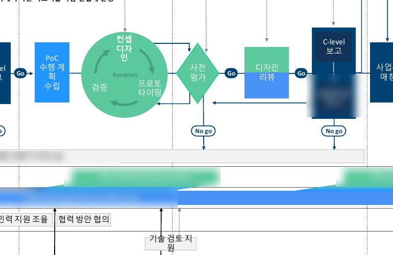
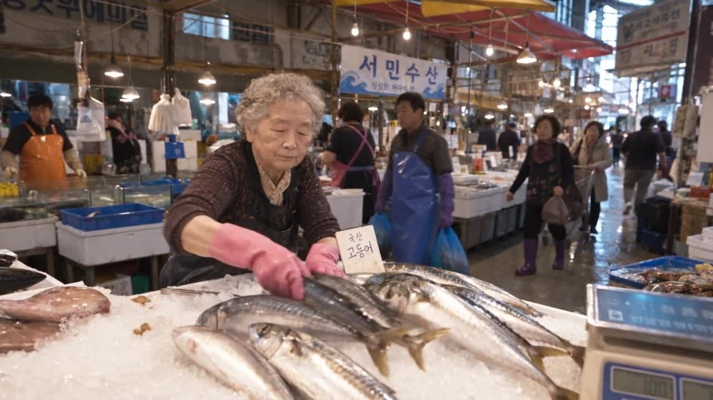
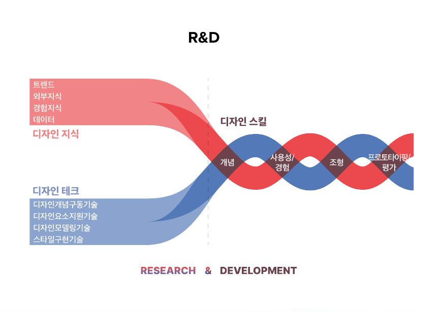

AI의 가능성을,
작동하는 제품으로.
사용자의 의도를 생성 조건으로 구체화하고,
모델의 제약과 현장의 문제를 제품 설계·구현으로 연결했습니다.
Selected projects06
문제를 바라본 관점과 구현한 구조

01DREAMUS
대화 파이프라인·콘텐츠 정책을 설계하고, 생성 모델과 대기 경험을 함께 조정했습니다.

02AI Design Process Companion
사용 내역 자동 기록과 판단 메모를 직접 구현해 학생 약 27명이 수업에서 사용하고 있습니다.

03META
인터뷰로 문제 범위를 좁히고, 움직임을 예고하는 6가지 안내 규칙과 3종 프로토타입으로 구체화했습니다.

04Samsung
선행-양산 연계 프로세스 제안에 연구팀으로 참여하고, 디지털 툴킷 제작과 실무진 워크숍 관찰·수정을 맡았습니다.

05NUNBIT
소음 속 거래 시나리오에서 원문·요약·응답 안내의 정보 범위와 전환 순서를 설계했습니다.

06Future Design R&D
서울대 조형연구소의 디자인 R&D 전략 연구에 참여해, 메가트렌드를 Handbook과 트렌드맵으로 정리했습니다.
디자인의 판단을,
구현의 언어로 연결합니다.
디자인 리서치와 교육 현장에서 문제를 발견하고, 프로토타입으로 구체화해 왔습니다. DREAMUS에서는 연구팀과 개발사의 실행을 연결했고, Companion에서는 문제 정의부터 개발까지 직접 수행했습니다.
DREAMUS와 Companion을 핵심 사례로, META의 문제 재정의와 NUNBIT의 정보 설계, 삼성 프로젝트의 툴킷 제작과 사용 관찰, 서울대 조형연구소에서 수행한 미래 디자인 R&D 전략 연구를 함께 소개합니다. 각 사례에 본인의 역할, 구현 범위와 남은 검증을 구분해 담았습니다.